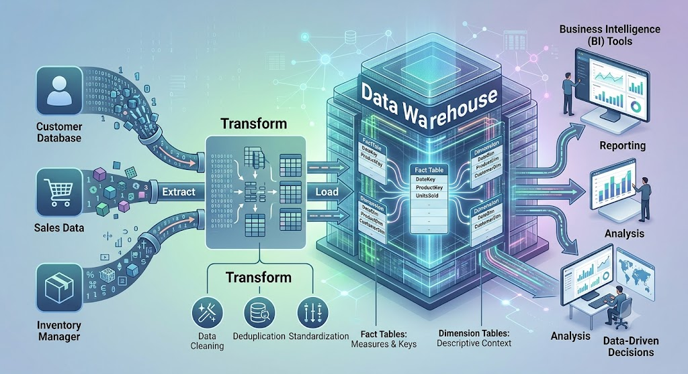
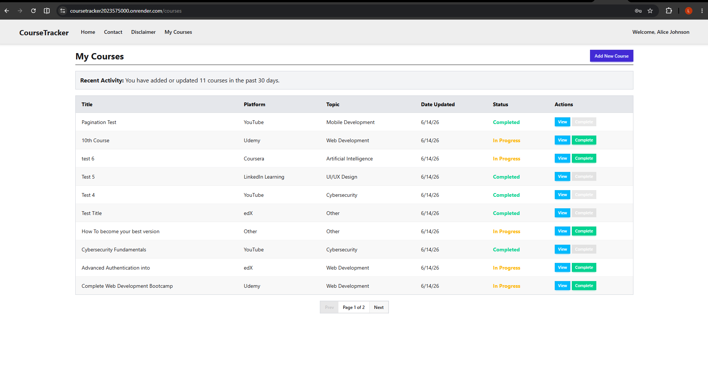
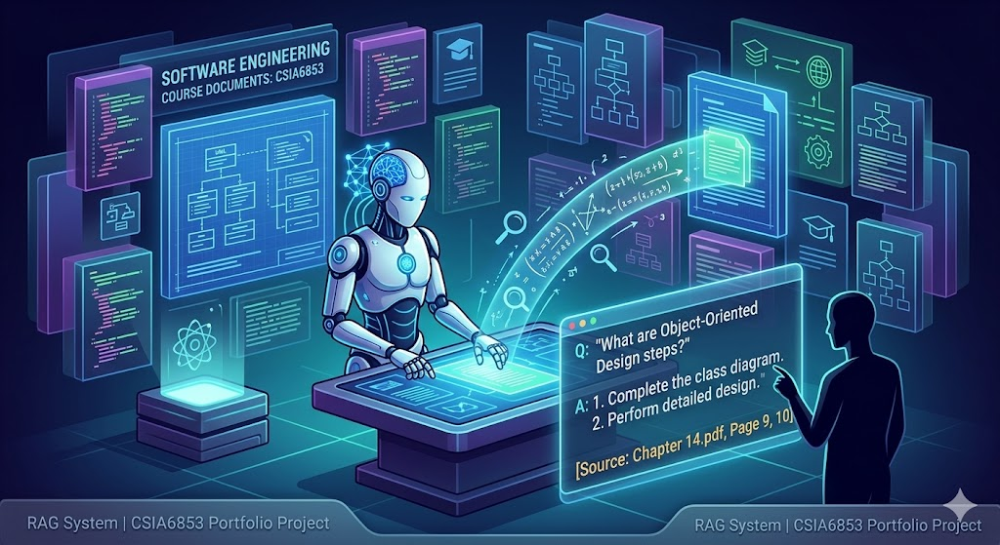
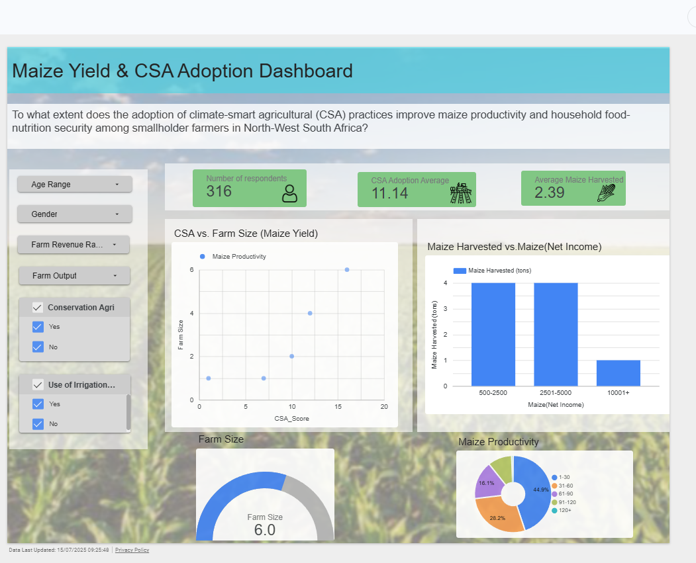
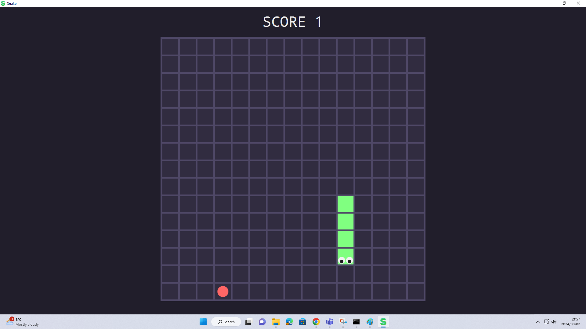
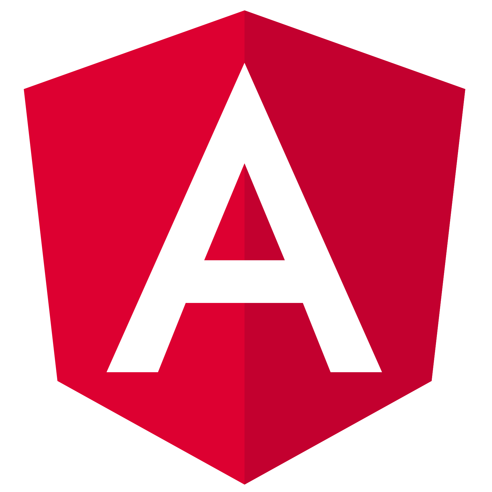
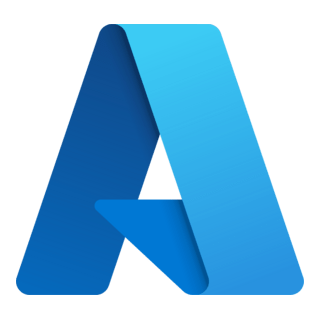
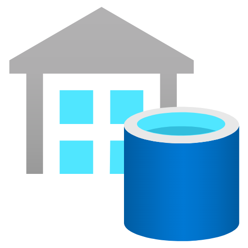
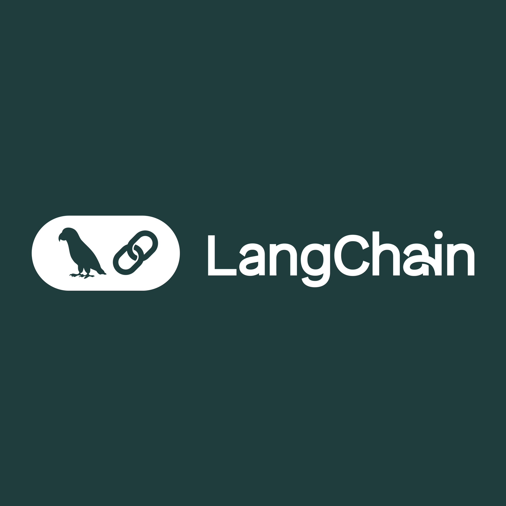

Hi, I'm Lukhanyo Kalashe.
A
Honours candidate in Computer Science & Informatics with hands-on experience across full-stack engineering, data engineering, and applied NLP.
About
I am a Software and Data Engineer driven by the challenge of turning complex data into actionable, high-performing systems. I have a demonstrated ability to design and ship production-ready systems, from secure ASP.NET Core & Angular SPAs deployed on Azure and Render, to dimensional data warehouse pipelines built in SSIS, to Retrieval-Augmented Generation (RAG) systems developed in Python and LangChain.
I possess a strong foundation in clean architecture, cloud deployment, and translating complex business requirements into maintainable, scalable technical solutions.
- Languages: C#, TypeScript, JavaScript, Python, SQL, R, HTML, CSS, SAS
- Frontend: Angular, TailwindCSS, DaisyUI, Bootstrap, jQuery
- Backend & Cloud: ASP.NET Core Web API, Entity Framework Core, SignalR, Docker, Azure, Render, REST APIs, JWT, CI/CD, Git
- Data Engineering & BI: Power BI, DAX, SQL Server, SSIS (ETL), MySQL, Star Schema / Dimensional Modelling, Slowly Changing Dimensions (SCD)
- AI & NLP: Python, LangChain, Hugging Face Transformers (BERT/GPT), spaCy, NLTK, scikit-learn, Pandas, Semantic Search, Prompt Engineering
- Architecture: MVC, Unit of Work, Repository Pattern, RBAC, Agile, UML
Experience
- Mentored first-year students in OOP principles, C# programming logic, and introductory web development.
- Delivered clear explanations of complex concepts and provided actionable code reviews aligned with software engineering best practices.
- Evaluated and marked technical assignments, maintaining consistent grading standards across a large cohort.
Projects

A comprehensive, AI-assisted web application that automates the extraction of software requirements from natural language documents and deterministically generates formal UML architecture/ERD models.
- Tools: Angular, TypeScript, Python, FastAPI, spaCy, OpenAI API (LLMs), Pydantic, PlantUML, Tailwind CSS / DaisyUI
- Implemented a Natural Language Processing (NLP) preprocessing pipeline using spaCy to sanitize and logically chunk SRS documents for constrained LLM entity extraction.
- Developed an interactive Human-in-the-Loop (HITL) Angular web interface that allows users to review, validate, and edit AI-extracted classes, attributes, and relationships.
- Engineered a deterministic, rule-based backend engine in Python utilizing FastAPI and Pydantic models to transform validated JSON data into syntactically correct PlantUML code, mitigating AI structural hallucinations.
- Integrated client-side PlantUML encoding to render visual UML class diagrams directly in the browser alongside automated export functionalities for generated source code.

A comprehensive full-stack social application featuring real-time interactions.
- Tools: ASP.NET Core Web API, Angular, TypeScript, Entity Framework Core, SignalR, Docker, SQL Server, Azure, Cloudinary
- Implemented real-time online presence tracking and live user messaging using SignalR.
- Containerized SQL Server database using Docker for consistent development and production environments.
- Integrated Cloudinary for scalable photo storage and utilized client-side caching.
- Configured CI/CD pipelines and published the production build to Microsoft Azure via Git.

Multi-subject data warehouse and BI analytics platform for a distribution company.
- Tools: Power BI, DAX, SQL Server, SSIS, Visual Studio 2022
- Produced a fully normalised star schema dimensional model with three fact tables (FactProduction, FactInventory, FactSales).
- Developed SSIS packages implementing Derived Column, Lookup, Conditional Split, Data Conversion, and Sort transformations.
- Developed a 4-page interactive Power BI dashboard utilizing custom DAX measures for executive and supply chain analytics.

A cloud-hosted web solution for tracking online courses and tutorials.
- Tools: ASP.NET Core 10.0, C#, Angular 20, Render, SQL, JWT
- Engineered the frontend utilizing Angular 20 standalone components and Angular Signals.
- Secured the application with ASP.NET Identity, JWT tokenization, and HttpOnly refresh cookies.
- Built the data access layer employing the Repository and Unit of Work patterns, and deployed to Render.

A Retrieval-Augmented Generation (RAG) system for technical software engineering documents.
- Tools: Python, LangChain, Hugging Face Transformers, spaCy, FAISS, TF-IDF
- Engineered a practical tool to automate the analysis and querying of technical course documents.
- Implemented dense semantic retrieval utilizing FAISS and document embeddings to ensure high-accuracy context fetching.
- Designed a hybrid search approach incorporating TF-IDF to significantly improve retrieval precision.

Exploratory data analysis assessing the impact of Climate-Smart Agriculture on crop yield and food security.
- Tools: Python, Pandas, Scikit-learn, Seaborn, Looker Studio, Google Colab
- Conducted comprehensive EDA on survey data from 316 smallholder farmers in North-West South Africa.
- Applied K-Means clustering and statistical analysis to evaluate CSA adoption against maize productivity.
- Developed an interactive Looker Studio dashboard to visualize findings and guide agricultural policy recommendations.

Hybrid machine-learning system for detecting anomalies in AWS EC2 CPU utilization datasets.
- Tools: Python, Scikit-learn, Numba, Isolation Forest, Local Outlier Factor
- Designed an ensemble ML pipeline utilizing sliding-window feature engineering and statistical thresholding.
- Optimized performance with Numba, successfully processing 10,000-point time-series datasets.
- Achieved an exceptional 90.1% F1-Score (94.2% Recall, 86.9% Precision) across 10 evaluation datasets.

A classic Snake game desktop application built with C# and the .NET Framework.
- Tools: C#, WPF, .NET Framework, OOP
- Engineered game logic utilizing Object-Oriented Programming (OOP) principles and event-driven architecture.
- Implemented continuous game state management, grid-based translation, and real-time collision detection.
- Designed the graphical user interface (GUI) and rendering system leveraging Windows Presentation Foundation (WPF).
Skills
Languages & Frontend
 C#
C#
 TypeScript
TypeScript

Angular TailwindCSS
TailwindCSS
 HTML5 & CSS3
HTML5 & CSS3
Backend, Cloud & Databases
 ASP.NET Core
ASP.NET Core
 SQL Server
SQL Server
 Docker
Docker

Azure Git / CI-CD
Git / CI-CD
Data Engineering & BI
 DAX
DAX

Data Warehousing R
R
AI, NLP & Libraries

LangChainEducation
South Africa
Degree: BSc Honours - Computer Science & Informatics
Awards: JSE Bursary Recipient (2026)
Dates: Jan 2026 - Present
- Natural Language Processing
- Advanced Internet Programming
- Data Warehousing
- Business Intelligence
- Data Analytics
- Analytical Programming
Focus Areas:
South Africa
Degree: BSc Information Technology - Computer Science & Business Management
Achievement: Graduated with Distinction
Dates: Jan 2023 - Nov 2025
- Data Structures & Advanced Programming
- Systems Analysis & Design
- Databases & DBMS
- Internet Programming
- Business Data Analytics
- Statistics
Relevant Coursework: